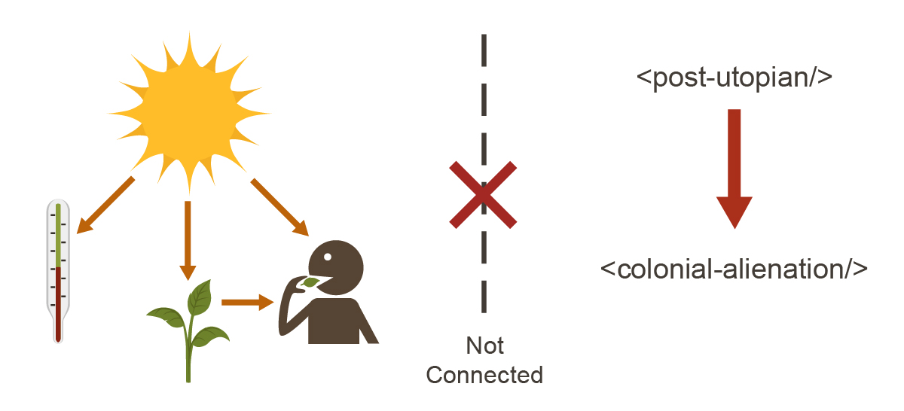
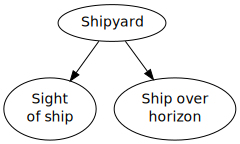

Eliezer Yudkowsky, 12 October 2012 02:11AM
Followup to: The Useful Concept of Truth [http://lesswrong.com/lw/eqn/the_useful_idea_of_truth/]
We previously asked [http://lesswrong.com/lw/eqn/the_useful_idea_of_truth/7jlu]:
What rule would restrict our beliefs to just statements that can be meaningful, without excluding a priori anything that could in principle be true?
It doesn't work to require that the belief's truth or falsity make a sensory difference. It's true, but not testable, to say that a spaceship going over the cosmological horizon of an expanding universe does not suddenly blink out of existence. It's meaningful and false, rather than meaningless, to say that on March 22nd, 2003, the particles in the center of the Sun spontaneously arranged themselves into a short-lived chocolate cake. This statement's truth or falsity has no consequences we'll ever be able to test experientally. Nonetheless, it legitimately describes a way reality could be, but isn't; the atoms in our universe could've been arranged like that on March 22nd 2003, but they weren't.
You can't say that there has to be some way to arrange the atoms in the universe so as to make the claim true or alternatively false. Then the theory of quantum mechanics is a priori meaningless, because there's no way to arrange atoms to make it true. And if you try to substitute quantum fields instead, well, what if they discover something else tomorrow? And is it meaningless -rather than meaningful and false - to imagine that physicists are lying about quantum mechanics in a grand organized conspiracy?
Since claims are rendered true or false by how-the-universe-is, the question "What claims can be meaningful?" implies the question "What sort of reality can exist for our statements to correspond to?"
If you rephrase it this way, the question probably sounds completely fruitless and pointless, the sort of thing that a philosopher would ponder for years before producing a long, incomprehensible book that would be studied by future generations of unhappy students while being of no conceivable interest to anyone with a real job.
But while deep philosophical dilemmas such as these are never settled by philosophers, they are sometimes settled by people working on a related practical problem which happens to intersect the dilemma. There are a lot of people who think I'm being too harsh on philosophers when I express skepticism about mainstream philosophy; but in this case, at least, history clearly bears out the point. Philosophers have been discussing the nature of reality for literal millennia... and yet the people who first delineated and formalized a critical hint about the nature of reality, the people who first discovered what sort of things seem to be real,were trying to solve a completely different-sounding question.
They were trying to figure out whether you can tell the direction of cause and effect from survey data.
Please now read Causal Diagrams and Causal Models [http://lesswrong.com/lw/ev3/causal_diagrams_and_causal_models/], which was modularized out so that it could act as a standalone introduction. This post involves some simple math, but causality is so basic to key future posts that it's pretty important to get at least some grasp on the math involved. Once you are finished reading, continue with the rest of this post.
Okay, now suppose someone were to claim the following:
"A universe is a connected fabric of causes and effects."
vs. |  |
(In the right-hand image we see a connected causal fabric; the sun raises the temperature, makes plants grow, and sends light into the eyes of the person eating from the plant. On the other hand, while "post-utopian" is linked to "colonial alienation" and vice versa, these two elements don't connect to the rest of the causal fabric - so that must not be a universe.)
This same someone might further claim:
"For a statement to be comparable to your universe, so that it can be true or alternatively false, it must talk about stuff you can find in relation to yourself by tracing out causal links."
To clarify the second claim, the idea here is that reference can trace causal links forwards or backwards. If a spaceship goes over the cosmological horizon, it may not cause anything else to happen to you after that. But you could still say, 'I saw the space shipyard - it affected my eyes - and the shipyard building was the cause of that ship existing and going over the horizon.' You know the second causal link exists, because you've previously observed the general law implementing links of that type - previously observed that objects continue to exist and do not violate Conservation of Energy by spontaneously vanishing.

And now I present three meditations, whose answers (or at least, what I think are the answers) will appear at later points in Highly Advanced Epistemology 101 For Beginners. Please take a shot at whispering the answers to yourself; or if you're bold enough to go on record, comments for collecting posted answers are linked.
Meditation 1: [http://lesswrong.com/lw/eva/the_fabric_of_real_things/#7lqh]
"You say that a universe is a connected fabric of causes and effects. Well, that's a very Western viewpoint - that it's all about mechanistic, deterministic stuff. I agree that anything else is outside the realm of science, but it can still be real, you know. My cousin is psychic - if you draw a card from his deck of cards, he can tell you the name of your card before he looks at it. There's no mechanism for it - it's not a causal thing that scientists could study - he just does it. Same thing when I commune on a deep level with the entire universe in order to realize that my partner truly loves me. I agree that purely spiritual phenomena are outside the realm of causal processes, which can be scientifically understood, but I don't agree that they can't be real."
How would you reply?
Meditation 2: [http://lesswrong.com/lw/eva/the_fabric_of_real_things/#7lqi]
"Does your rule there forbid epiphenomenalist theories of consciousness [http://lesswrong.com/lw/p7/zombies_zombies/] - that consciousness is caused by neurons, but doesn't affect those neurons in turn? The classic argument for epiphenomenal consciousness has always been that we can imagine a universe in which all the atoms are in the same place and people behave exactly the same way, but there's nobody home - no awareness, no consciousness, inside the brain. The usual effect of the brain generating consciousness is missing, but consciousness doesn't cause anything else in turn - it's just a passive awareness - and so from the outside the universe looks the same. Now, I'm not so much interested in whether you think epiphenomenal theories of consciousness are true or false - rather, I want to know if you think they're impossible or meaningless a priori based on your rules."
How would you reply?
Meditation 3 [http://lesswrong.com/lw/eva/the_fabric_of_real_things/#7lqj]:
Does the idea that everything is made of causes and effects meaningfully constrain experience? Can you coherently say how reality might look, if our universe did not have the kind of structure that appears in a causal model?
Mainstream status. [http://lesswrong.com/lw/eva/the_fabric_of_real_things/#7lqg]
Part of the sequence Highly Advanced Epistemology 101 for Beginners [http://wiki.lesswrong.com/wiki/Highly_Advanced_Epistemology_101_for_Beginners]
Next post: "Causal Diagrams and Causal Models [http://lesswrong.com/lw/ev3/causal_diagrams_and_causal_models/]"
Previous post: "Firewalling the Optimal from the Rational [http://lesswrong.com/lw/etf/firewalling_the_optimal_from_the_rational/]"
| Sequence 17: Highly Advanced Epistemology 101 for Beginners: | |
|---|---|
Referenced by: Firewalling the Optimal from the Rational • Causal Diagrams and Causal Models • Stuff That Makes Stuff Happen • Causal Reference • Proofs, Implications, and Models • Causal Universes
Original with comments: The Fabric of Real Things